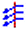
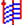
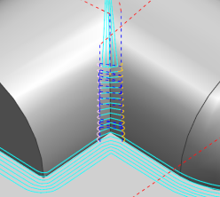
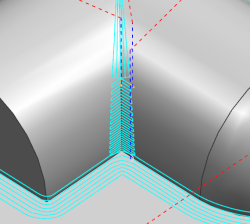

Flow Cut enhancements
What is it?
The Flow Cut drive method is enhanced to semi-finish areas on the part with uncut material, such as corners, deep pockets, or slots. The Flow Cut Reference Tool operation references a larger tool to determine the areas on the part where material remains, and then cuts with a smaller tool to remove the material. In previous releases, the Flow Cut drive method was primarily focused on finishing conditions.
The following new Zlevel cut patterns are supported for the Flow Cut drive method:
-
 Zlevel Zig
-
Zlevel Zig Zag
-
 Zlevel Zig Zag with Lifts
Use these new cut patterns to machine:
-
Slots and pockets with steep walls.
-
Near vertical corners where Zlevel cut patterns give the best results.
The Zlevel cut patterns keep the tool on a plane in steep areas to prevent tool motions that plunge into the material.
-
Pockets where there is more material remaining on the floor than in the steep corners.
You can also use these cut patterns to remove uncut material that would otherwise remain when the reference tool for a Flow Cut Reference Tool operation is too large to fit inside a pocket or slot.
You specify the cut patterns for steep and non-steep areas separately, and can improve machining results for semi-finishing operations by using one of the Flowcut patterns in non-steep and one of the Zlevel cut patterns in steep areas. Non-steep areas are shallow areas.
The Flowcut Reference Tool operation creates smooth transitions between the Zlevel and Flow Cut cut patterns as well as steep and non-steep regions.
The following example shows areas where the reference tool was too large to fit. Individual steep and non-steep cut patterns are used to remove the remaining material in a single operation.
|
 |
|
 |
|
Non-steep Cut Pattern = Zig Zag Steep Cut Pattern = Crosscut Zig |
|
Non-steep Cut Pattern = Zig Zag Steep Cut Pattern = Zlevel Zig Zag |
Where do I find it?
|
Application |
Manufacturing |
|
Prerequisite |
The operations must follow a previous milling operation that used a larger tool. |
|
Toolbar |
Insert→Create Operation |
|
Location in dialog box |
Flowcut Ref Tool dialog box→Drive Method group→Flow Cut→Edit |